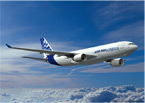

Viage com conforto
Viage com conforto Os melhores preços, as melhores condições
Voe connosco!

|
Bagagem proibida  Por motivos de segurança, é probido o transporte como bagagem de mão de determinados objectos:
Clique para consulta da lista completa de objectos proibidos IMPORTANTE: Nos voos para os Estados Unidos da América, poderá ser sujeito a uma nova verificação das bagagens de mão, e uma inspeção pormenorizada ao calçado e a todos os aparelhos elétricos e eletrónicos que transporte consigo. Informamos que para este destino, é completamente proibido o transporta de isqueiros, tanto na bagagem de mão, como na bagagem de porão. |
Como Reservar
Caso efectue a reserva com 10 dias úteis de antecedência e resida num dos seguintes países: Portugal, Espanha, França, Reino Unido, Itália, Irlanda, Alemanha, Holanda, Luxemburgo, Suíça, Suécia, Bélgica, Grécia, Dinamarca, Finlândia, Estados Unidos da América ou Canadá poderá optar por pagar com cartão de crédito (Visa, Mastercard ou american Express) e receberá os bilhetes por correio na morada que indicar no seu registo de utilizador.
Após conclusão do seu plano de viagem poderá levantar o seu biilhete no balcão local, respeitando o prazo de emissão de 72 horas.
Caso o destino prentendido permita esta facilidade poderá efectuar o pagamento do seu bilhete através de cartão de crédito. |
|
A Pelican Airlines e Lisboa Vista do Tejo. Uma das mais belas cidades da Europa. Num ambiente requintado e muito confortável, os passageiros têm a oportunidade de desfrutar de um passeio singular num dos estuários mais bonitos da Europa. Estes circuitos constituem uma forma agradável de admirar os mais belos monumentos, oferencendo uma perspetiva romântica e diferente da cidade. |
|
| Todos os direitos reservados - Pelican Airlines - 2007 | |
 Ao efectuar a sua reserva através do nosso site poderá optar pelas seguintes modalidades:
Ao efectuar a sua reserva através do nosso site poderá optar pelas seguintes modalidades: